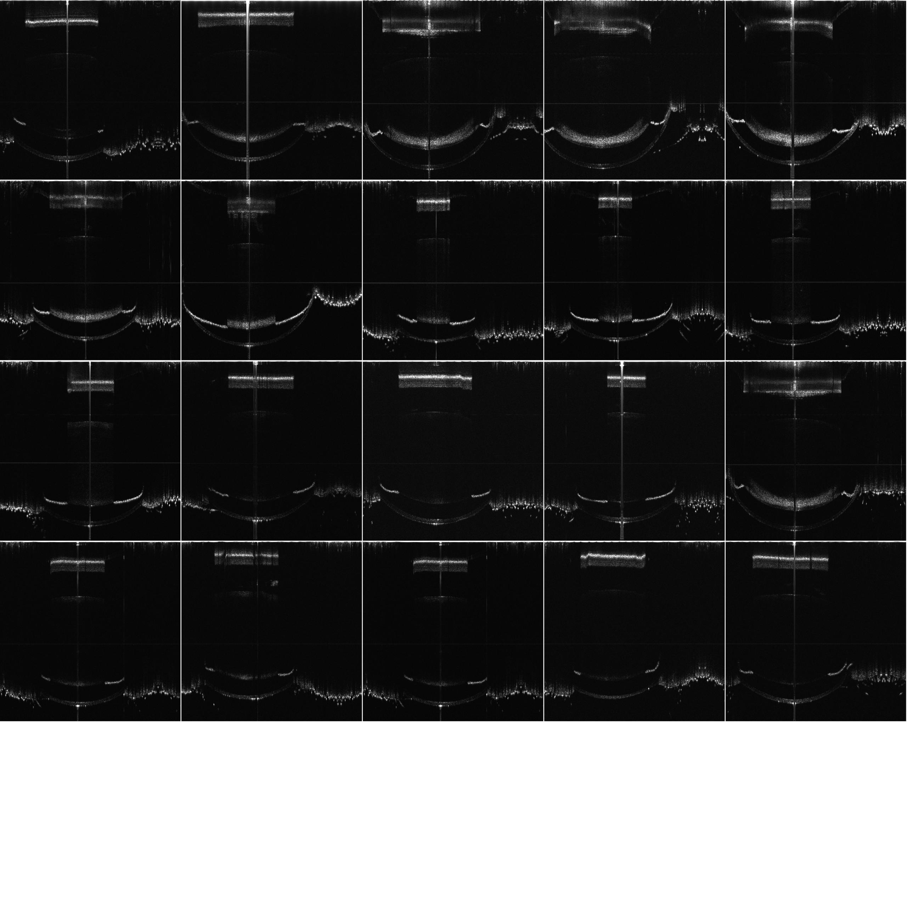
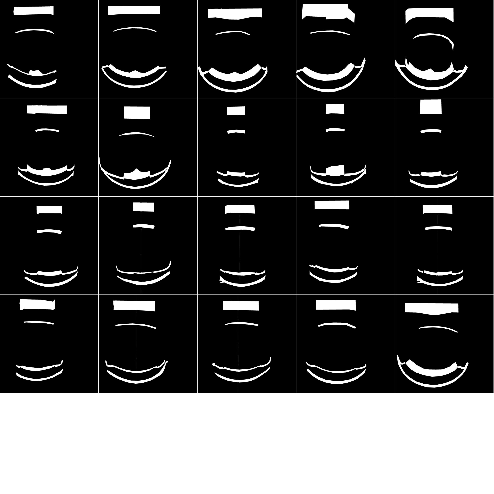
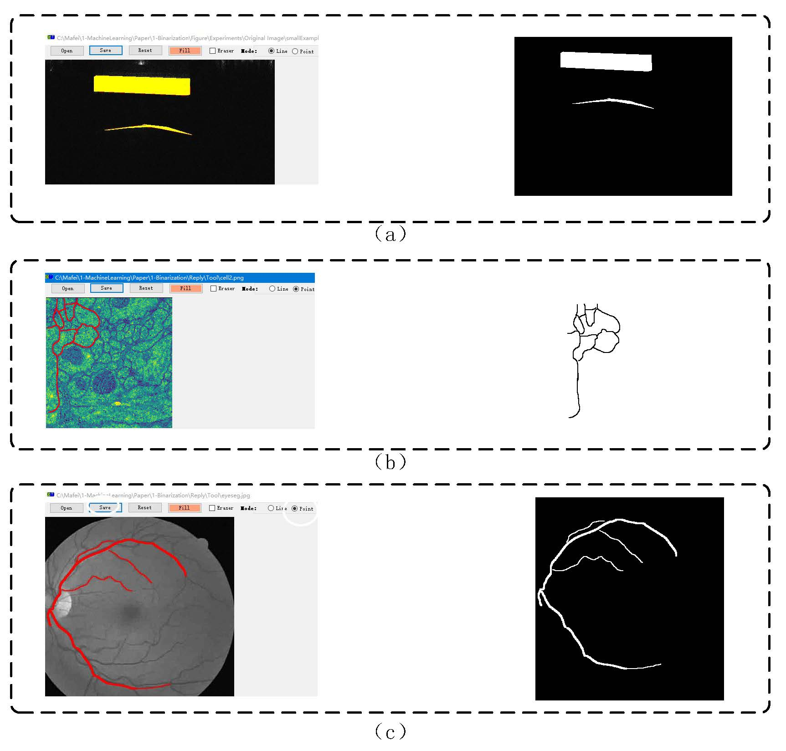
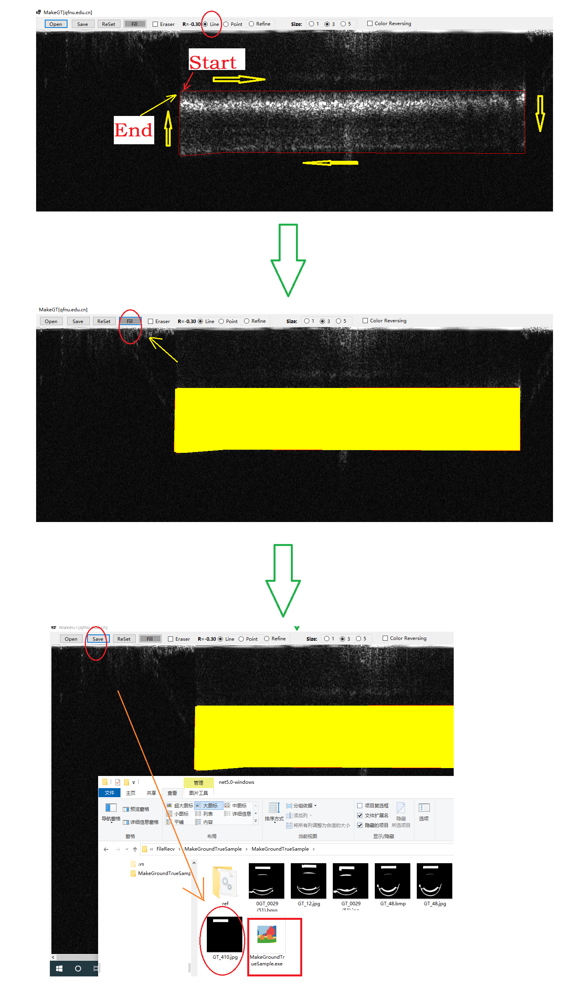

MEVOCT: A Dataset of Mouse Eyes in vivo with Optical Coherence Tomography |
||
|---|---|---|
-------------------------------------------------------------------------------------------------------------------------------------------- Labeled patches and Gaussian Naive Bayesian classification (LPBC) model for binarization 2022.4.26., Permission to use copy, or modify this dataset, tool and codes for educational and research purposes. E-mail : mafei0603（at）163.com ; 17861318579（at）163.com Homepage : https://17861318579.github.io/LPBC -------------------------------------------------------------------------------------------------------------------------------------------- 1. Dataset Description
Optical coherence tomography (OCT) angiography has drawn much attention in the medical imaging field. Firstly, we cover the eyeball with a translucent eye patch of a radius of about 8 mm and a collar with a radius of about 1.2 mm, which can prevent the eye patch from peeling off by the mouse's paw. Then, we put the mouse on the box. Making their eyes aim at the probe part of the infrared refractometer, the light can enter into the mouse's eyes. Finally, we can get the image of mouse eye in vivo by SS-OCT system. Due to the limitation of page space and network bandwidth, we resize the images as 512*512 for view. As shown in Fig.1, we can see that the background and foreground of some organs are low-contrast.
|
||
| 2. Application Tool and code Download
2.1 The making ground-truth tool developed by our team can be downloaded with URL：MakeGroundtruthTool_v1.01 (windows desktop app at .netframework2.0).This software is a specialized tool to make the ground truth from original samples under complex scene. The ground-truth images can be obtained by this tool with the help in Fig.2, which is developed by our team. This application is run under .netframework2.0(win-x64) with windows 10 (x86 or x64). 2.2 The ground-truth tool developed by our team can be downloaded with URL：MakeGroundtruthTool_v1.0 (windows desktop app at .net 5.0).This software is a specialized tool to make the ground truth from original samples under complex scene. The ground-truth images can be obtained by this tool with the help in Fig.2, which is developed by our team. This application is run under .net 5.0 runtime(win-x86) with windows 10 (x86 or x64). 2.3 The code of our approach (LPBC) for demo can be downloaded here (MATLAB R2016a). 2.4 The code of U-Net for demo can be downloaded here (Pytorch). |
||
|
-------------------------------------------------------------------------------------------------------------------------------------------- FIGURE 1 The thumbnail view of the MEVOCTThe Original Image  The Ground-truth  -------------------------------------------------------------------------------------------------------------------------------------------- FIGURE 2 The help for the ground-truth tool(MakeGT, it can make GT for several types of scenes.)  |